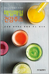
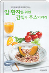

한국영양학회와 대한암예방학회에서 제안하는 '내 몸을 살리는 채소, 과일 건강 주스 레시피'를 도서로 만나보세요

매일매일 건강주스(한국영양학회가 제안하는 매일매일 건강주스 건강을 생각하는 특별한 주스 레시피)
현대인들은 서구화된 식습관과 스트레스 등으로 비만, 암, 고혈압, 당뇨병과 같은 만성질환으로부터 건강을 위협받고 있습니다. 파이토케미컬을 비롯하여 다양한 영양소가 풍부한 채소, 과일 섭취는 건강을 이롭게 합니다. 한국영양학회는 채소, 과일 섭취와 건강 증진의 상관 관계를 연구하고 본 책을 통하여 채소, 과일을 어떻게 그리고 얼마나 섭취해야 하는지 설명합니다. 또한 누구든지 쉽게 따라할 수 있는 주스 레시피를 소개하여 건강 주스 섭취를 장려하고자 합니다.
한국영양학회 지음 / bay studio 사진 / 한국영양학회 / 162쪽 / 2015년 09월 출간

매일매일 건강주스(한국영양학회가 제안하는 매일매일 건강주스 건강을 생각하는 특별한 주스 레시피)
현대인들은 서구화된 식습관과 스트레스 등으로 비만, 암, 고혈압, 당뇨병과 같은 만성질환으로부터 건강을 위협받고 있습니다. 파이토케미컬을 비롯하여 다양한 영양소가 풍부한 채소, 과일 섭취는 건강을 이롭게 합니다. 한국영양학회는 채소, 과일 섭취와 건강 증진의 상관 관계를 연구하고 본 책을 통하여 채소, 과일을 어떻게 그리고 얼마나 섭취해야 하는지 설명합니다. 또한 누구든지 쉽게 따라할 수 있는 주스 레시피를 소개하여 건강 주스 섭취를 장려하고자 합니다.
한국영양학회 지음 / bay studio 사진 / 한국영양학회 / 162쪽 / 2015년 09월 출간
휴롬 논문
휴롬 논문
저속 압착 방식으로 착즙하여 만든 채소, 과일 주스가 영양학적으로 매우 우수하다는 것을 입증한 다양한 논문을 확인해 보세요
Fruit Juice Supplementation Alters Human Skin Antioxidant Levels In Vivo : Case Study of Korean Adults by Resonance Raman Spectroscopy
채소 과일에 풍부한 카로티노이드는 항산화 효과가 우수하여 건강 증진에 도움이 된다고 알 · 려져 있습니다 본 논문은 카로티노이드가 풍부한 주스의 섭취가 체내 항산화능 개선에 미 . 치는 효과를 조사한 연구 결과입니다 건강한 성인이 카로티노이드가 풍부한 주스 특히 토 . , 마토 및 포도주스를 주간 섭취한 후 피부 카로티노이드 농도를 측정한 결과 카로티노이드 6 농도가 증가한 것으로 나타나 체내 항산화능 개선에 도움을 주는 것으로 보고하였습니다.
Biotechnology and Bioprocess Engineering / 2018
Effect of Mixed Fruit and Vegetable Juice on Alcohol Hangovers in Healthy Adults
본 논문은 체내 알코올 대사를 촉진시키는 것으로 알려진 신선초 청포도 배를 혼합한 신 , , 선초청포도배주스의 숙취 개선효과를 임상시험을 통해 확인한 논문입니다 건강한 성인에게 . 알코올 섭취 전 후 신선초청포도배주스를 섭취시킨 결과 혈중 알코올 농도를 빨리 감소시켜 · 숙취 개선에 도움이 되는 것으로 나타났습니다 또한 신선초청포도배주스의 섭취는 두통 . , 목마름과 같은 숙취 증상을 완화시키는 것을 확인하였습니다.
Preventive Nutrition and Food Science / 2018
Antioxidant activities of fresh grape juices prepared using various household processing methods
본 논문은 가정에서 사용하는 다양한 주스기를 이용하여 만든 포도주스와 일반적으로 섭취하는 방법인 씨와 껍질을 제거하고 먹는 과육의 영양학적 특성 및 항산화 활성을 비교 연구한 논문입니다. 저속착즙기, 고속주서기, 블렌더로 만든 포도주스로 섭취하는 방법과 씨와 껍질을 제거한 포도과육으로 섭취하는 방법을 비교한 결과 저속착즙기로 만든 포도주스로 섭취하는 것이 총, 폴리페놀, 총 플라보노이드, 안토시아닌, 비타민 C와 같은 영양성분의 섭취와 항산화 활성에 있어 우수한 것으로 조사되었습니다.
Korean Society of Food Science and Tdehnology / 2017
친환경 세척제의 처리 방법을 달리하여 착즙한 당근 주스의 미생물 안전성 및 품질
최근 웰빙 의식의 고취로 인해 소비 트랜드는 일반 주스에서 착즙 주스를 선호하는 경향으로 변화되었습니다. 또한 채소, 과일 착즙 주스의 영양적 가치에 있어 색, 향, 맛 등이 중요한 요소로 인식되고 있어 비가열 착즙 주스에 대한 관심이 더욱더 증가하고 있습니다. 하지만, 비가열 과채주스의 경우 미생물학적 위해 요소에 대한 불안요소가 크므로 세척 공정에 있어 초기 세균 제어는 매우 중요합니다. 본 논문은 친환경 세척제를 이용하여 초기 미생물을 제어하는 휴롬 주스의 세척 방법과 관련하여 기술된 논문입니다.
한국식품영양과학회 / 2017
신선초를 혼합한 과채주스의 알코올 대사 효소 활성에 미치는 영향
최근 숙취 해소에 대한 소비자의 관심이 증가함에 따라 다양한 숙취해소 제품이 개발되고 있습니다. 본 논문에서는 신선초방울토마토주스와 신선초청포도주스가 알코올 분해효소 활성을 증가시켜 알코올 섭취 후 체내 알코올을 빠르게 분해하고 제거하는데 도움을 주는 것으로 나타났습니다. 또한 항산화 물질이 풍부하여 알코올 대사과정에서 활성산소 생성을 억제시켜 항산화 효과가 우수함을 확인하였습니다.
한국생물공학회 / 2016
저속압착방식으로 착즙한파인애플 및 키위 주스의 저온저장 기간에 따른 단백질 분해효소 및 항산화 활성
최근 소비자들은 웰빙 의식의 고취로 인해 탄산음료보다 채소 과일주스 등 건강음료에 대한 선호도가 늘고 있습니다. 하지만 주스를 만드는 방법 중 하나인 블렌더의 사용은 고속칼날 회전에 의한 마찰열 및 산화로 인한 영양소 파괴 우려로 저속착즙 주스기에 대한 관심이 더욱 더 증가하고 있습니다. 본 연구는 단백질 분해효소가 다량 함유된 파인애플과 키위를 저속 착즙하여 저장 온도 및 저장 기간에 따른 효소 활성 및 항산화 활성을 측정하였습니다. 그 결과, 휴롬으로 착즙한 파인애플과 키위주스의 비타민 C 및 효소 활성은 냉동으로 저장 시 30일 동안 90%이상 유지되는 것을 확인할 수 있었습니다.
한국식품영양과학회 / 2016
Quality Evaluation of FreshTomato Juices Prepared by Different Type of Household Juicers
본 연구는 저속주스기와 고속주스기로 만든 신선한 토마토 주스의 영양학적 특성을 평가하고 비교하였습니다. 그 결과 저속으로 착즙한 토마토 주스가 고속으로 갈아 만든 토마토 주스에 비해 폴리페놀, 비타민 C, 라이코펜의 함량이 높다는 것이 밝혀졌습니다. 고속주스기로 만든 토마토 주스는 세포벽이 파괴되고 미세 공기방울에 의해 쉽게 층 분리가 나타난 반면 저속 토마토 주스는 층 분리와 산화에 의한 영향이 적어 영양학적 특성과 항산화 활성이 우수한 것을 확인하였습니다.
Korean Society of FoodScience and Tdehnology / 2015
Potential of plant extractsprepared from fruits andmedicinal herbs inhabited in Gyeongnam area as natural anti-aging materials
노화방지를 통해 건강한 삶을 유지하고자 하는 연구들이 늘어나고 있습니다. 수많은 연구들에 의해 활성산소가 피부노화를 촉진하고 과다한 지방축적에 의해 피부장벽이 손상되고 조직 구조가 변형된다는 사실이 확인되었습니다. 본 연구에서는 경남 지역에서 생산되는 채소, 과일, 약초 한방주스의 지방축적 억제 및 활성산소 제거 효과를 확인하였습니다.
The Korean Society of FoodScience and Nutrition / 2014
주스 제조 장치에 따른 채소 및과일 주스의 품질 변화
최근 건강에 대한 관심이 증대하면서 신선한 채소 과일 주스에 대한 관심이 어느 때보다 높습니다. 본 연구는 착즙 방법에 따른 채소 과일 주스의 착즙율, 효소 활성, 항산화 활성, 항염 활성, 총 폴리페놀 함량 등 주스의 영양학적 특성 및 품질특성에 대해 조사하였습니다. 연구 결과 신선한 채소, 과일 주스의 섭취는 항산화 활성과 항염 활성 등 건강 증진에 도움이 되고, 특히 주스의 제조 방식에 따라 영양소 함량 및 항산화, 항염증 활성에 차이가 있으므로 올바른 착즙기 선택이 중요하다고 보고하였습니다.